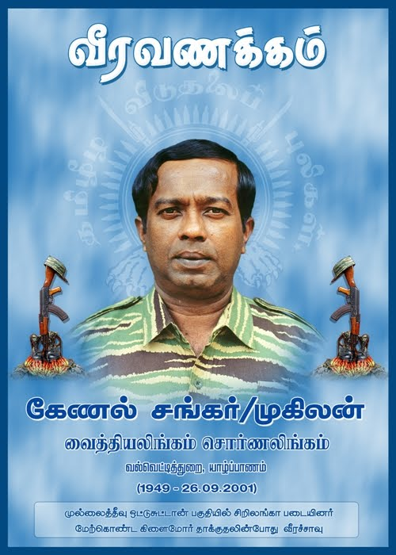

கேணல் சங்கர் வீர வரலாறு (வான்படைத் தளபதி)

உண்மைப் பெயர்: வைத்திலிங்கம் சொர்ணலிங்கம்
இயக்கப் பெயர்: கேணல் சங்கர் / திலகன்
வீரச்சாவு தேதி: 26.09.2001
வீரச்சாவடைந்த இடம்: ஒட்டுசுட்டான், வன்னி
வரலாற்றுக்குறிப்பு
தமிழீழ வான்புலிகள் (Air Tigers) பிரிவின் நிறுவனராகவும், வான்படைத் தளபதியாகவும் திகழ்ந்த மூத்த தளபதி கேணல் சங்கர் ஆவார். இவர் லண்டனில் ஏரோநாட்டிக்கல் (Aeronautical Engineeering) படித்துவிட்டு தாயகம் திரும்பி வான்படையைக் கட்டமைத்தார். சிறிலங்கா இராணுவத்தின் ஆழ ஊடுருவும் பிரிவின் கிளைமோர் தாக்குதலில் வீரச்சாவடைந்தார்.